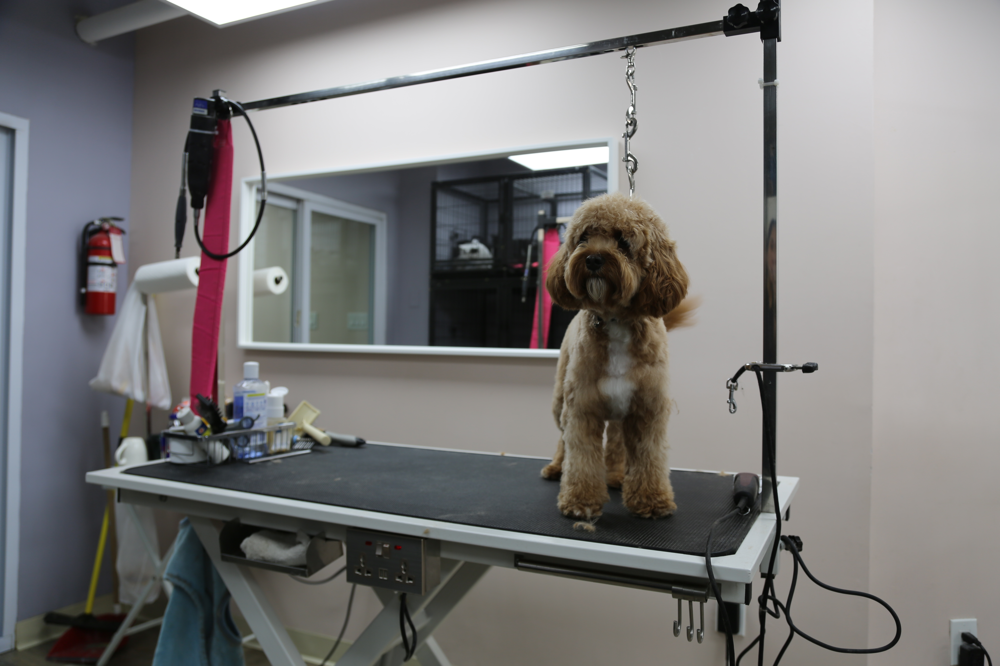

Big City, Small Dogs: A Deep Dive into New York’s Canine Craze
New York City is home not only to more than eight million humans but also to over 600,000 dogs. There are more dogs in NYC than there are people in the state of Wyoming or the country of Iceland. But what do we really know about these four-pawed fellows?
It’s a sunny Saturday morning in Harlem, and the local groomer has plenty of customers. Two puppies are playing in the fenced waiting area while three others are getting a new look. “We’ve had this business for four years now,” says Alejandro Bastidas, owner of Snoot Club Pet Grooming.
Bastidas is not the only New Yorker who has seen opportunity in the city’s booming dog business. Walking a dog in sunny Central Park has been an iconic part of the New York lifestyle for decades, and when the Covid-19 pandemic shut down most city activities, this one felt more appealing than ever. In 2020, as New Yorkers faced lockdowns, many started dreaming of new family members. Soon, the number of yearly dog licenses peaked.
People have pets everywhere—big cities, lots of pets. In fact, the dog-to-human ratio in NYC is lower than in some other parts of the U.S. Still, 600,000 dogs is a lot. That’s more than the entire population of Wyoming (576,851) and even Iceland (387,558). But what about the cats? Wouldn’t it make more sense to compare these numbers to NYC cats rather than people in another U.S. state or a small Nordic country? Sadly, New York doesn’t require cat owners to register their pets, so the total number remains as mysterious as a cat’s mind.
Like Bastidas, there are many people making money by fulfilling the needs of New York’s big dog society. An increased number of dogs means more dog walkers and sitters are needed. Dogs have their own daycare centers and stores dedicated to leashes, food, and clothes. If you go to a Starbucks with your dog, it’s quite likely that you’ll be offered a “pup cup,” a little single-use mug full of whipped cream.
In Alejandro Bastidas’s dog salon, he offers grooming, bathing, and nail care services for dogs.
“Returning clients visit us every 6–8 weeks. They get a full grooming service: bath, haircut, nail trim, teeth brushing, and ear cleaning. On the other hand, clients who only need a bath come back every 4 weeks,” Bastidas explains.
Alejandro Bastidas and Karol with their client Odie. Photo: Rosa Kettumäki
“Goldendoodle, Shih Tzu, Yorkie, Maltese, Cockapoo, Golden Retriever…” Bastidas starts a long list of the common breeds he has as clients. Of course, groomers have a unique view of the city’s dog scene. Some breeds have fur that requires more maintenance than others.
In general, New York is a big city with small dogs. The three most popular breeds are all small: Yorkshire Terrier, Shih Tzu, and Chihuahua. And this makes sense, especially if you need to travel between boroughs. The Metropolitan Transportation Authority (MTA) has a rule: On the subway or bus, all pets must be in a bag or other container and carried in a way that doesn’t annoy other riders.
Odie, Coco, and Capri, the names of the dogs gathered at Snoot Club Pet Grooming this Saturday, are very typical New York City dog names. They all have two syllables and a cute vibe. Coco is the most common of these three; according to dog license data, over 4,600 dogs share her name. The name Odie was given to 204 dogs between 2014 and 2023. Capri is the rarest of the three, with only 41 occurrences in NYC dog license data.
The most popular dog name in the city is clear. Bella is number one. 6,833 puppy owners chose it as the best name for their furry friend. The table below includes all the dog names given in NYC from 2014 to 2023. Use the search bar to find out how popular your favorite name is, or to figure out how many NYC dogs share a name with you.
But where are all these doggos actually located? It seems that the main dog district of NYC is the Upper West Side. So if you are a dog lover without your own dog, I recommend a walk in Central Park or Riverside Park—you're guaranteed to see a lot of different kinds of dogs. Or if you’re a dog owner looking for friends for you and your four-pawed life partner, here are some tips on where to go.
The dog hotspot of the city is the Upper West Side, where more than 13,800 dog licenses were issued between 2014 and 2023. This raises a burning question: Are dog owners seeking apartments near the world’s most iconic park, or does living by Central Park come with a puppy obligation?
So, whether you're a proud dog parent, an enthusiastic dog-watcher, or just someone who appreciates the daily drama of a French Bulldog refusing to walk on a hot sidewalk—congratulations. Among many other things, New York is a city of dogs.
Just don’t forget the MTA rule: if your pup isn’t small enough to fit in a tote bag, you’ll have to get creative. And if you’re hoping to be a unique snowflake, maybe skip naming your Yorkshire Terrier Bella, unless you’re okay with three other lookalike pups turning around when you call.
“In a typical week, he has approximately 30 clients,” Mr. Bastidas says.
That might not sound like much in a city of over 600,000 dogs—but it’s enough to keep the dryers humming, the treats flowing, and Mr. Bastidas on his feet all day. From fluffy newcomers to seasoned regulars who know exactly where the treat jar is, each dog that trots through the door adds to the rhythm of life at the Snoot Club. Because in a city full of dogs, it’s not just the big parks or boutique pet stores that shape the scene. Sometimes, it’s the family-run salon on a Harlem, clippers buzzing, tails wagging, that keeps New York’s dog world turning.

Capri is enjoiying Saturday at the groomer. Photo: Rosa Kettumäki